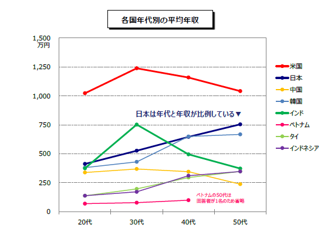
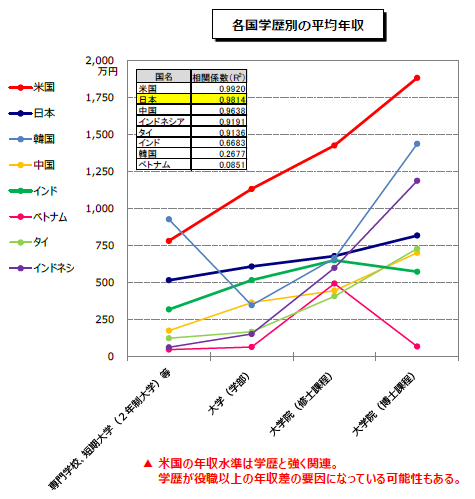

- ソフトウェア業界
- ハードウェア業界
- 海外と日本のエンジニアの給料の差
Webデザイナーはインターネット上のWebサイトのデザインを行います。HTMLやCSSなどWebサイトを作るうえで基本となるスキルや、JavaScriptなどのプログラミング言語の知識が必要となります。
WebディレクターはWebサイト制作を監督・指揮する役目を担っています。Webサイト制作には、クライアントはもちろん、Webデザイナー、Webプログラマーなどさまざまな役割の人が関わります。Webサイト制作に関わる人々をまとめ、Webサイト制作の進行管理・品質管理を行う職種がWebディレクターです。
顧客である企業から経営や業務上の問題点をヒアリングし、その問題の解決策を提案する仕事を行う職種がITコンサルタントです。経験がものをいう職種のため、エンジニアの最終目標といってもいいでしょう。経験も大切ですが、顧客やエンジニアたちと協力し合いながら仕事を進める必要があるため、コミュニケーション能力が重要視されます。
経験を積んだエンジニアが自分の得意分野の知識を活用し、営業面で活躍する職種がセールスエンジニアです。顧客に対して自社の製品やサービスをアピールしたり、顧客の抱えている課題に効果的な提案したりする仕事です。ITコンサルタントと同様、高いコミュニケーション能力が必要とされます。
プログラマーはソフトウェア開発の基本となる職種です。プログラミング言語は数多くあるため、専門に扱う言語により、担当できる案件が異なります。プログラミング言語の知識はもちろんですが、プログラムを効率よく書く技術や素養なども重要視されます。
システムエンジニアはシステム開発に総合的に関わる職種です。システムエンジニアの頭文字から「SE」と省略されて呼ばれることが多くあります。基本的なプログラミングの知識をベースにプロジェクト全体に関わる仕事のため、非常にやりがいのある職種といえます。
パソコンはとても便利ですが、1台1台が個別に使用されている状態では利便性が限られてしまいます。特に、企業などにおいて多数のパソコンを使用している 場合は、それぞれのパソコンをネットワークで繋ぎ、効率的に運用することが不可欠です。このようなネットワークの構築や運用、保守を行う職種が、ネットワークエンジニアです。ネットワークエンジニアには、複数のOSやハードウェアなどに関する幅広い知識が求められます。
現在では、家電や自動車などもコンピューターを利用して制御されています。ハードウェア業界には、コンピューターで制御できる製品を製造する大手 メーカーも含まれます。製品に組み込まれるシステム（組込みシステム）を開発することは、ハードウェア業界の企業にとって重要な課題です。 組込みシステムの開発を担当する職種を、組込みシステムエンジニアといいます。製品の安全性や機能の精確性は、組込みシステムエンジニアの技量にかかっています。また、組込みエンジニアは、組込みシステム用の開発環境に精通しているだけでなく、特殊なプログラミング言語にも精通している必要があります。
結論＝日本のエンジニアは給与が低い。
日本：467万円
フランス ：500万くらい
シンガポール：563万円
イギリス：700万円
アメリカ：889万円
チェコ：400万円くらい
ポーランド：月１８万とか２５万
- 日本と海外では、エンジニアに対する考え方そのものが違う
- 日本の組織における問題
海外の場合は、そもそもこのエンジニアという職業が、コンピュータサイエンスに長けた、高度な学問知識を必要とする専門職という扱いです。日本と比べると、エンジニアの職業内容はより細分化されており、深い知識が必要とされる場合が多く、エンジニアとしてやっていくならスキルは必須。日本のように、入社してから学んで実績を積んでいく、というのが厳しい環境です。
下記のグラフを見ていただけるとわかるが、各国の年代別平均年収を比較したものだ。日本では見事なまでに右肩上がりの年収になっていることがわかる。
下記は学歴別の平均年収で、日本も緩やかではあるが学歴が高いほうが収入が高い。しかしアメリカや韓国、インドネシアなどは学歴が高いほど収入が高くなっている。特にアメリカは顕著に学歴と年収が結びついているし、韓国・インドネシアも博士課程の収入は日本以上になっている。
というように、日本の年功序列型賃金がレベルの高くないエンジニアを多く生む、負のスパイラルを産んでいるのではないだろうか。
海外の日系企業で働く時に必要な英語力：海外の日系企業で働く場合、そこまでの英語力は必要とされません。
海外の外資系企業で働く時に必要な英語力:海外の外資系企業で働く場合は、ある程度の英語力が必要とされます。一般的にはビジネスレベル（目安はTOEIC800点以上）の英語力とされているようです。しかし、だからといって転職した時点でそこまでのものが求められるものではありません。実際には海外の外資系企業の求人であっても英語力不問のものは結構あったりします。